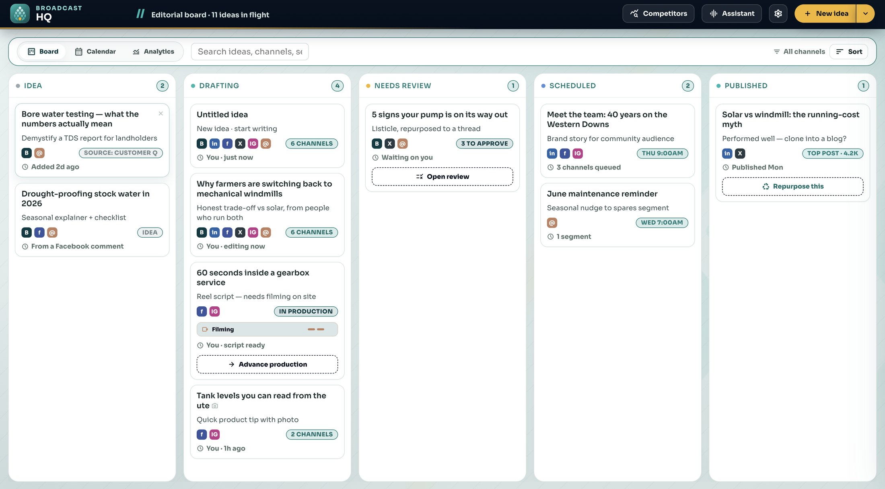

Start with what you know.
Use your expertise and source material to give the campaign a useful starting point.
BROADCAST HQ · BUILT FOR ADVICE FIRMS
Capture an idea by voice, file, link or text. Let AI help shape the campaign, then review, approve and plan supported publishing in one connected workflow.

Broadcast HQ campaign board · example content
BROADCAST HQ
Use your expertise and source material to give the campaign a useful starting point.
Give AI brand context and direction, then refine the output for your audience.
Keep a person accountable for approval and plan the supported channels and publishing dates.
MEET BROADCAST HQ
Follow the campaign from the first draft to your team’s review and a visible publishing schedule.
Bring ideas, drafts, review and scheduled content into one campaign board. Give your team a shared view of what happens next.
See Broadcast HQ in a demo ↗Product brochure screens · example contentAFTER THE POST GOES LIVE
CONNECTED ENGAGEMENT
Bring supported comments and messages into the workflow. Prepare a reply, assign an owner or log an enquiry so the next step has somewhere to go.
From response to follow-through.LEARN & IMPROVE
Review available publishing, engagement and enquiry signals. Use what earned attention to shape your next brief and campaign test.
From results to your next idea.Publishing, inbox and analytics capabilities depend on supported integrations, account permissions and your agreed configuration.
PART OF ONE CONNECTED SYSTEM
Command Centre brings the client relationship and operational work together. Broadcast HQ extends your marketing. Bunya Voice carries conversations into follow-up.
See how it fits together ↗CONFIDENCE IN THE MOVE
Agree brand context, supported channels, publishing accounts and who reviews each campaign.
Take a sample idea through drafting, approval and supported scheduling with your team.
Use client video tutorials, practical tasks and agreed support to make the move.
BEFORE YOU MAKE THE MOVE
Build an agreed approval process around your team. AI-generated content needs review for accuracy, brand fit and the requirements that apply to your firm.
Your Blueprint confirms supported channels, publishing accounts, review rules, access, integrations, licensing and costs. Bring your preferred channels to the demo so we can discuss the right configuration.
Broadcast HQ extends the operating system with campaign creation and management. Command Centre remains the core for client relationships and operational work.
YOUR NEXT CHAPTER STARTS WITH ONE WORKFLOW.
Test Drive explores Command Centre. Book a Demo to see Broadcast HQ and discuss your campaign workflow.